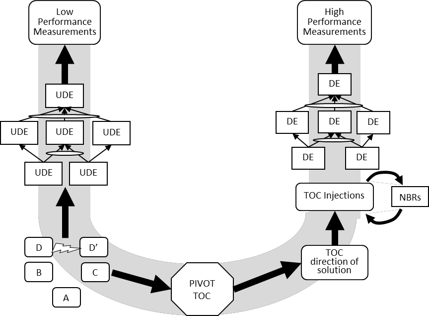

U-образная форма (U-shape) - диаграмма, иллюстрирующая объекты TOC, участвующие в анализе текущей реальности, а также построении и использовании решения для создания улучшенной будущей реальности.
Использование: U-образная форма была создана для организации, хранения и легкого извлечения знаний ТОС. U-образная форма используется для типовых решений TOC, таких как изготовление на заказ, изготовление с учетом доступности, управление проектами критической цепи и распространение, а также разработка маркетинговых предложений. U-образную форму также можно использовать для облегчения обсуждения вопросов в последовательности вопросов об изменении.

#мп
Синоним: U-shape